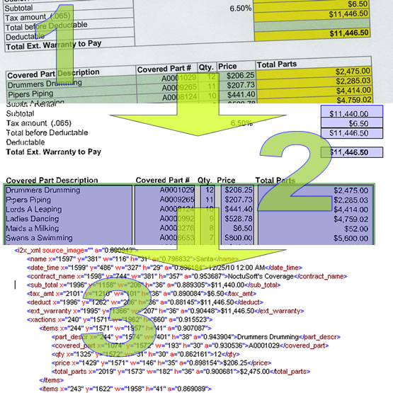

Quick Start
You have downloaded this program and are eager to get data from your images, but don't want to read through the introduction and tutorials? We feel you, we want immediate results. With that in mind, we have created a quick start guide that will show you how to immediately utilize the application.
This application was designed the fill the need to obtain data from images in an organized format. It's goal is to get data from Image to a representation of the image text as XML. It generates the XML maintaining the hierarchy of the form data. This is particularly useful for transaction data such as bank statements. In bank statements, a row of data is grouped together, but typically in many OCR scenarios, code is required to join math data with their rows. The following image is an example of what is produced from the application.
|
 |
1. The original document with colors, grid lines, slightly skewed from the scanner. 2. Through the image processing instructions in the application, we removed the colors and straightened the form. Then we drew regions around the text we are interested in. 3. This is the XML the application produces. From here, it is a much simpler matter to import the data into a database or other data consuming application. |
Copyright © 2009, NoctuSoft, Inc.
This help file has been generated by the freeware version of HelpNDoc